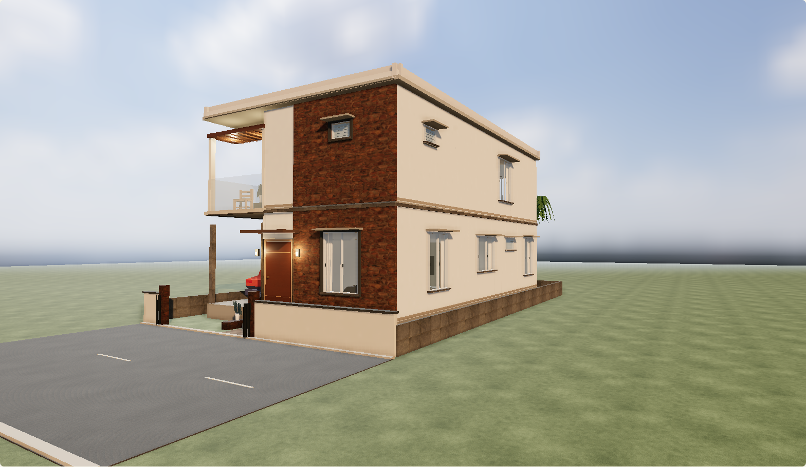

HOUSE CONCEPT STUDIO / FACADE STUDY
Five Tamil Nadu facade recipes.
Actual browser captures, not AI replacement images. The kit is differentiated and opening-aware, but the results still fall short of the references in realism and composition. Read the honest three remaining differences per recipe.
Full comparison · Implementation and limits · Capture evidence · GLB evidence
Before: original exterior
The genuine pre-edit capture. Same measured G+1 house, street camera and presentation settings.
